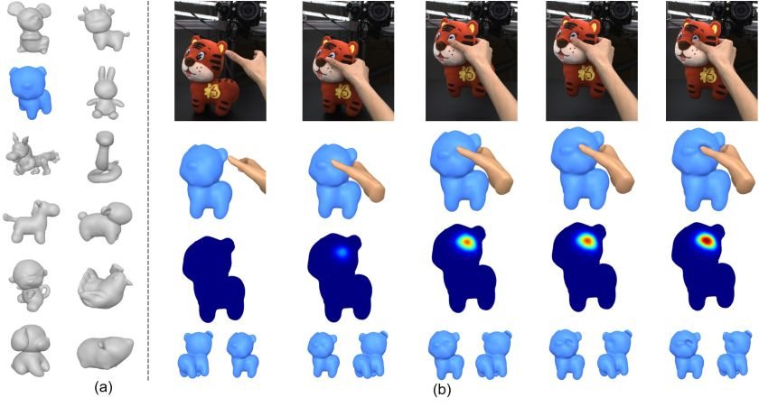

International Conference on Computational Visual Media (CVM), 2023
HMDO : Markerless Multi-view Hand Manipulation Capture with Deformable Objects
Hand and deformable object reconstruction pipeline.
(a) Image features are first extracted from the current frame T, including the 2D poses of the hands and the masks of the object; (b) Hands motion tracking is performed based on image features and historical information; (c) The object global pose is estimated based on the current frame object masks and tracked hands, and the object mesh of the previous frame T-1; (d) The deformed object is obtained under the guidance of hand and object collaboration. Abstract
We construct the first markerless deformable interaction dataset recording interactive motions of the hands and deformable objects, called HMDO (Hand Manipulation with Deformable Objects). With our built multi-view capture system, it captures the deformable interactions with multiple perspectives, various object shapes, and diverse interactive forms. Our motivation is the current lack of hand and deformable object interaction datasets, as 3D hand and deformable object reconstruction is challenging. Mainly due to mutual occlusion, the interaction area is difficult to observe, the visual features between the hand and the object are entangled, and the reconstruction of the interaction area deformation is difficult. To tackle this challenge, we propose a method to annotate our captured data. Our key idea is to collaborate with estimated hand features to guide the object global pose estimation, and then optimize the deformation process of the object by analyzing the relationship between the hand and the object. Through comprehensive evaluation, the proposed method can reconstruct interactive motions of hands and deformable objects with high quality. HMDO currently consists of 21600 frames over 12 sequences. In the future, this dataset could boost the research of learning-based reconstruction of deformable interaction scenes.
Dataset

Our HMDO dataset is the markerless deformable interaction dataset, which records the interactive motions of the hands and 12 deformable objects from 10 perspectives. Its main focus is the non-rigid contact deformation of interacting objects. The HMDO dataset consists of 21600 frames.
The rights to copy, distribute, and use the HMDO dataset (henceforth called "HMDO") you are being given access to are under the control of Yangang Wang, director of the Vision and Cognition Lab, Southeast University. You are hereby given permission to copy this data in electronic or hardcopy form for your own scientific use and to distribute it for scientific use to colleagues within your research group. Inclusion of images or video made from this data in a scholarly publication (printed or electronic) is also permitted. In this case, credit must be given to the publication: *HMDO : Markerless Multi-view Hand Manipulation Capture with Deformable Objects*. For any other use, including distribution outside your research group, written permission is required from Yangang Wang.
Any commercial use is not allowed
. Commercial use includes but is not limited to sale of the data, derivatives, replicas, images, or video, inclusion in a product for sale, or inclusion in advertisements (printed or electronic), on commercially-oriented web sites, or in trade shows.
Reference
Wei Xie, Zhipeng Yu, Zimeng Zhao, Binghui Zuo and Yangang Wang. "HMDO : Markerless Multi-view Hand Manipulation Capture with Deformable Objects". International Conference on Computational Visual Media (CVM), 2023.
Acknowledgments: This work was supported in part by the National Natural Science Foundation of China (No. 62076061) and the Natural Science Foundation of Jiangsu Province (No. BK20220127).
- © 2023 - . Dr. Yangang Wang. All Rights Reserved.